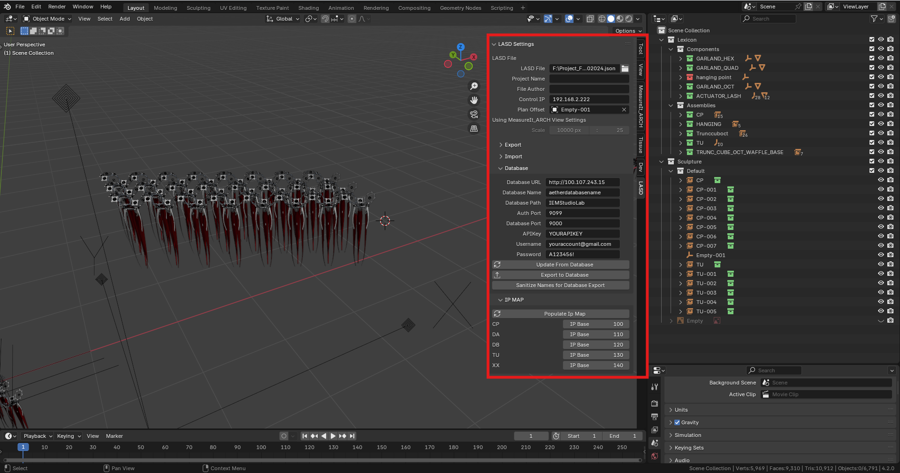

Testbed Setup¶
To create a new testbed, the following data needs to be provided:
-
Testbed Data: Testbed data describes the spatial locations, and metadata that describe the actuators, sensors & node controllers that make up a testbed. This data is provided using the "Living Architecture Systems Description" (LASD) format.
-
Testbed Image: The testbed image is the background image displayed in the Influence Engine dashboard.
1) Authoring Testbed Data:¶
Testbed Data in the LASD format can be authored in the 3D modeling tools Blender or Rhino and exported using the LASD plugins (install information for LASD plugins can be found here). To export an
To export Testbed Data directly from Blender to an Aether Database configure the following settings in the LASD Database panel: 
- Database URL: The URL of your Aether Server instance
- Database Name: The name of your Aether Database
- Database Path: The name of the Testbed you want to export this LASD data too
- Auth Port: The authorization port for your Aether Database (Default is typically 9099)
- Database Port: The port for the Aether Database (Default is typically 9000)
- API Key: The API Key for your Aether Database
- Username: The username for your account in your Aether Database
- Password: The password for your account in your Aether Database
Once those setting have been configured, use the Export to Database button to export this testbed to the Database.
Troubleshooting Export Errors
If there are errors with the export, try running the Sanitize Names for Database Export command, this will attempt to replace any invalid characters that cause issues when exporting (Blender .### suffix on object names is typically the culprit here)
2) Adding a Testbed Plan Image:¶
To add a custom background image that will display in the Aether Dashboard:
-
Create a plan view image plan view can be created in the tool of your testbed in the tool of your choice. The image must be saved as a .png.
Note
When creating a background image, ensure that the image is drawn using the same pixel:meter scale as defined in the testbed Metadata.
-
Add the image to the Aether Server: plan images should be located in the
Testbed_Server/public/plan_imagesfolder and be named with the following format[YOUR TESTBED NAME]_plan.png